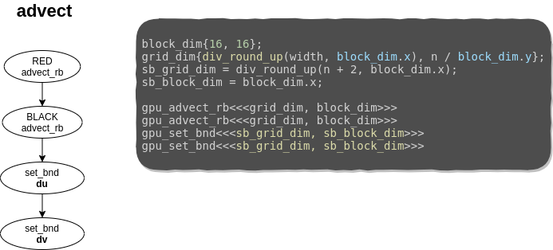

class: center, middle # Lab 4 - Cuda Parallel Computing Mateo de Mayo - Benjamín Ocampo --- class: center, middle ## Migration: from CPU to GPU --- # Migration: from CPU to GPU In order to put our hands over the work and looking up optimizations, we needed to migrate all our implementation to Cuda code. Remember that the simulation consists of a number of updates or steps **Simulation Step** - *react* - *step*: - *addsource* - *diffuse* - *project* - *advect* --- ## Migration: from CPU to GPU The migration process consisted in implementing them one by one, and checking if the simulation keeps well after it. Everything was performed incrementaly, synchronizing with the device and the host. But it was momentary until the migration was fully-implemented. It might be thought as the device "asking for help to the host", since it can not handle the th the functions. --- ## Migration: from CPU to GPU **Our Goal**: Launch the entire program to the GPU at the beggining, and synchronize at the end of the simulation. Then, measures will be normalized at that point. **Things that were on mind during the process:** - changes of signatures - makefile rules - deletion of omp pragma - new includes - differences between device and host data. - synchronizations (by means of kernels) --- class: center, middle # reactburst --- # reactburst The first version of this lab! It was called *reactburst* since *step* was computed by the GPU, but *react* was still performed by the CPU (without changes from the lab 3), i.e, first *react*, then burst of kernels. In order to do so, we had to deal with the migration of *step*. --- # reactburst <div align="center"> <img src="res/migration_imgs/graph-dependency.png" alt="graph-dependency" style="width:450px;" /> </div> - We had to decide which cloud might be a kernel and which one might be just a host function that launches other kernels. --- # reactburst: add_source In this case was straighforward, since *add_source* is not a complex function and *diffuse* can not start without the previous execution of *add_source*. It was converted into a kernel. --- # reactburst: diffuse <div align="center"> <img src="res/migration_imgs/diffuse.png" alt="graph-dependency" style="width:700px;" /> </div> - Three kernel launches for each iteration. - Implicit synchronizations with kernels. - block_dim was chosen according to the hardware. - grid_dim was chosen according to the problem. - gpu_set_bnd is launched in one dimension. --- # reactburst: project <div align="center"> <img src="res/migration_imgs/project.png" alt="graph-dependency" style="width:570px;" /> </div> --- # reactburst: advect <div align="center">  </div> --- # reactburst: kernels ```c __global__ void gpu_lin_solve_rb_step(grid_color color, unsigned int n, float a, float c, const float *__restrict__ same0, const float *__restrict__ neigh, float *__restrict__ same) { ... // assignments const int grid_width = gridDim.x * blockDim.x; const int grid_height = gridDim.y * blockDim.y; const int gtidx = blockIdx.x * blockDim.x + threadIdx.x; const int gtidy = blockIdx.y * blockDim.y + threadIdx.y; for (int y = 1 + gtidy; y <= n; y += grid_height) { for (int x = start + gtidx; x < width - (1 - start); x += grid_width) { int index = y * width + x; same[index] = (same0[index] + a * ( neigh[index - width] + neigh[index - start] + neigh[index - start + 1] + neigh[index + width] )) / c; } } } ``` - For each kernel, grid stride loop was used. - looping over the grids, working with the global id of each thread related to the current grid that we are working. - project and advect are similar. --- # reactburst: kernels ```c __global__ void gpu_set_bnd(unsigned int n, boundary b, float *x) { const int grid_width = gridDim.x * blockDim.x; const int gtid = blockIdx.x * blockDim.x + threadIdx.x; for (unsigned int i = 1 + gtid; i <= n; i += grid_width) { x[IX(0, i)] = b == VERTICAL ? -x[IX(1, i)] : x[IX(1, i)]; x[IX(n + 1, i)] = b == VERTICAL ? -x[IX(n, i)] : x[IX(n, i)]; x[IX(i, 0)] = b == HORIZONTAL ? -x[IX(i, 1)] : x[IX(i, 1)]; x[IX(i, n + 1)] = b == HORIZONTAL ? -x[IX(i, n)] : x[IX(i, n)]; } if(gtid == 0) { x[IX(0, 0)] = 0.5f * (x[IX(1, 0)] + x[IX(0, 1)]); x[IX(0, n + 1)] = 0.5f * (x[IX(1, n + 1)] + x[IX(0, n)]); x[IX(n + 1, 0)] = 0.5f * (x[IX(n, 0)] + x[IX(n + 1, 1)]); x[IX(n + 1, n + 1)] = -0.5f * (x[IX(n, n + 1)] + x[IX(n + 1, n)]); } } ``` - Again, grid stride loop over 1 dimension. - border cases were handled by just one thread (*gtid = 0*). --- # reactburst: pitfalls ```c react(hd_prev, hu_prev, hv_prev); checkCudaErrors(cudaMemcpy(dd_prev, hd_prev, size_in_m,cudaMemcpyHostToDevice)); checkCudaErrors(cudaMemcpy(du_prev, hu_prev, size_in_m, cudaMemcpyHostToDevice)); checkCudaErrors(cudaMemcpy(dv_prev, hv_prev, size_in_m, cudaMemcpyHostToDevice)); step(N, diff, visc, dt, dd, du, dv, dd_prev, du_prev, dv_prev, from, to); checkCudaErrors(cudaDeviceSynchronize()); checkCudaErrors(cudaMemcpy(hd_prev, dd_prev, size_in_m, cudaMemcpyDeviceToHost)); checkCudaErrors(cudaMemcpy(hu_prev, du_prev, size_in_m, cudaMemcpyDeviceToHost)); checkCudaErrors(cudaMemcpy(hv_prev, dv_prev, size_in_m, cudaMemcpyDeviceToHost)); ``` - *react* is computed by the host. - We can not avoid a synchronization and copies from host to device at that point for each simulation step. --- # reactburst: results --- class: center, middle # reactburst --- # reactburst Obviously, the bottleneck of *reactburst* is how *react* is computed. So let us get deep into that function to see what can be done to make it faster. --- # reactburst: before optimizing ```c // Two reductions for (i = 0; i < size; i++) { if (max_velocity2 < uu[i] * uu[i] + vv[i] * vv[i]) { max_velocity2 = uu[i] * uu[i] + vv[i] * vv[i]; } if (max_density < d[i]) { max_density = d[i]; } } // Memsets for (i = 0; i < size; i++) { uu[i] = vv[i] = d[i] = 0.0f; } ``` - Two reductions to be handled. - Use of memset instead of loops. --- # reactburst: before optimizing ```c // Do something with the reductions. if (max_velocity2 < 0.0000005f) { uu[IX(N / 2, N / 2)] = force * 10.0f; vv[IX(N / 2, N / 2)] = force * 10.0f; for (int y = 64; y < N; y += 64) for (int x = 64; x < N; x += 64) { uu[IX(x, y)] = force * 1000.0f * (N / 2 - y) / (N / 2); vv[IX(x, y)] = force * 1000.0f * (N / 2 - x) / (N / 2); } } if (max_density < 1.0f) { d[IX(N / 2, N / 2)] = source * 10.0f; for (int y = 64; y < N; y += 64) for (int x = 64; x < N; x += 64) d[IX(x, y)] = source * 1000.0f; } ``` - Read and writes that can be done by the GPU. ---